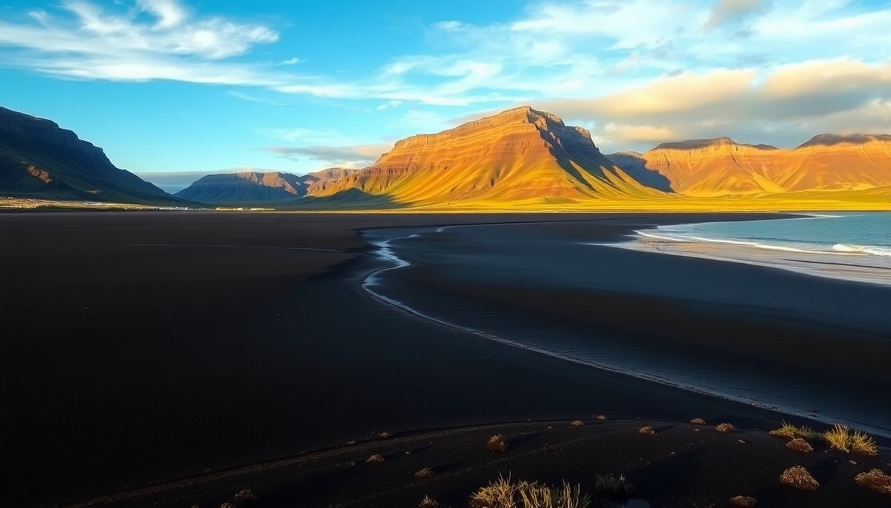

Best Beaches in Iceland: Black Sand & Geothermal Spots

I’ll admit it: when I landed in Iceland, I expected every beach to look like a postcard of a tropical paradise. They don’t. Instead, you get black volcanic sand, roaring Atlantic waves, and steam rising from geothermal vents right next to the shore. Over two weeks, I drove the Ring Road from Reykjavik to Akureyri and down to Vik, chasing the weirdest, most striking beaches I could find. Here’s what actually delivered—and what you can skip.
What makes Iceland’s black sand beaches different from normal beaches?
The sand is ground-up basalt lava, not coral or quartz. That means it’s jet-black, coarse, and often cold underfoot. At Reynisfjara, near Vik, the contrast between the white foam of the waves and the black shore is stark—almost surreal. But the real difference is the danger. These aren’t swim beaches. The “sneaker waves” at Reynisfjara can surge up the sand without warning, and the undertow is brutal. We watched a tourist get knocked off his feet while trying to take a selfie. Stay well back from the waterline.
- Reynisfjara (Vik): The famous one. Basalt columns, sea stacks, and black sand. Free parking, but crowded by 10 AM. Go at sunrise.
- Diamond Beach (Jökulsárlón): Icebergs from the glacier wash up on black sand. They look like diamonds. It’s a 2-hour detour from Vik, but worth it for the photos.
- Rauðisandur (Westfjords): Red-gold sand, not black. A 4x4 road to get there, but almost no people.
Where can you swim in geothermal water near Reykjavik without the Blue Lagoon crowds?
The Blue Lagoon is fine—if you like paying $80 for a crowded pool with silica masks. I skipped it. Instead, I hit Sky Lagoon, just 15 minutes from Reykjavik. It’s newer, cleaner, and the infinity-edge pool looks over the ocean. The seven-step ritual (cold plunge, sauna, cold mist) is included in the higher-tier ticket, and I actually enjoyed it. For a more local vibe, Laugardalslaug in Reykjavik is a public geothermal pool complex with multiple hot pots, a steam bath, and a 50-meter lap pool. Entry is about $10. No frills, no tourists.
- Sky Lagoon: Infinity edge, ocean views, pricier ($60–$80). Book a late-afternoon slot for sunset.
- Laugardalslaug: Cheap ($10), local, great for a quick soak after a day of walking Reykjavik’s Hallgrímskirkja area.
- Kópavogur Geothermal Pool (just south of Reykjavik): Even quieter, with a massive outdoor slide if you’re traveling with kids.
What are the best geothermal beaches and hot springs near Akureyri?
Akureyri sits in the north, and the geothermal scene there is less polished but more raw. My favorite was Myvatn Nature Baths, about 45 minutes east of Akureyri. It’s basically the Blue Lagoon’s quieter cousin—same milky-blue water, same sulfur smell, but half the price ($45) and a fraction of the crowd. The water temperature hovers around 38°C (100°F), and the view over Lake Myvatn is moody and volcanic.
- Myvatn Nature Baths: Blue water, fewer people, cheaper. Go early (8 AM opening) to have the place almost to yourself.
- Grjótagjá Cave: A thermal spring inside a lava cave. Water fluctuates between 40–50°C—sometimes too hot to enter. Used as a filming location for Game of Thrones.
- Hveravellir Hot Spring: A remote natural pool in the highlands, accessible by 4x4. No facilities, but it’s free and you’re surrounded by steaming fumaroles.
Which beach in Vik is actually worth stopping for—and which one should you skip?
Reynisfjara is the obvious answer, and yes, it’s worth it. The basalt columns look like organ pipes, the sea stacks (Reynisdrangar) are dramatic, and the black sand is genuinely striking. But the parking lot fills up fast, and the wind can be brutal. Bring a windproof jacket and a hat that won’t blow away. The nearby Vik Beach (the one right in town) is skippable—it’s smaller, less dramatic, and often has trash washed up. Instead, drive 10 minutes east to Dyrhólaey, a rocky promontory with a natural arch and a black sand beach below. It’s less crowded and offers a better view of the coast.
- Reynisfjara: Must-see. Stay 30 feet from the water. Sneaker waves are real.
- Dyrhólaey: Better for photos, fewer people. You can see puffins here in summer (June–August).
- Vik Beach: Skip. The town’s grocery store (Krónan) is more useful for stocking snacks.
How do you get to Iceland’s most remote black sand beaches without a 4x4?
Most of the famous black sand beaches are accessible by normal car on the Ring Road. Reynisfjara and Diamond Beach are both right off Route 1. But if you want something like Sólheimasandur—the wreck of a US Navy plane on a black sand beach—you need to walk. The road is closed to cars, and it’s a 4-km (2.5-mile) hike each way across flat, rocky sand. I did it in 45 minutes each way. It’s windy and exposed, and the wreck itself is smaller than you’d expect. Worth it if you’re into photography; skip it if you’re short on time.
- Sólheimasandur (plane wreck): Free, but parking costs about $5. No facilities. Bring water.
- Diamond Beach: Park at the Jökulsárlón glacier lagoon lot, cross the bridge on foot. Free.
- Reynisfjara: Free parking, but the lot fills up. Arrive before 9 AM or after 4 PM.
FAQ
Is it safe to swim at Iceland’s black sand beaches? No. The Atlantic currents are strong, and sneaker waves can pull you out. Reynisfjara has warning signs and a lifeguard in summer, but I wouldn’t go in past your ankles. Stick to geothermal pools for swimming.
Do I need to book geothermal pools in advance? For Sky Lagoon and Myvatn Nature Baths, yes—especially in summer. Laugardalslaug and other public pools take walk-ins. I booked Sky Lagoon two days ahead and got a 4 PM slot; Myvatn I booked the morning of.
What’s the best time of year to visit these beaches? June through August for the least wind and most daylight. But the crowds at Reynisfjara are worst in July. September and May are good compromises—fewer people, still reasonable weather. Winter (November–February) means short days and icy roads, but the Northern Lights can appear over Diamond Beach.
Conclusion
- Reynisfjara is the best black sand beach near Vik, but stay safe from the waves.
- Skip the Blue Lagoon; go to Sky Lagoon or Laugardalslaug for a better value near Reykjavik.
- Myvatn Nature Baths is the top geothermal spot near Akureyri—cheaper and quieter than the south.
- Diamond Beach is worth the drive for the icebergs on black sand.
- Most beaches are free; budget for parking fees (usually $5–$10) and a windproof jacket.